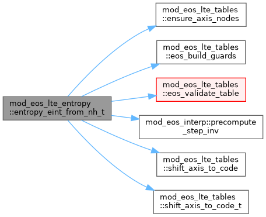
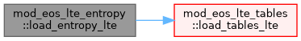

|
MPI-AMRVAC 3.2
The MPI - Adaptive Mesh Refinement - Versatile Advection Code (development version)
|
Entropy-method LTE EoS: every query is ONE bicubic Hermite evaluation. More...
Functions/Subroutines | |
| subroutine, public | load_entropy_lte () |
| Forward (log nH, log eint/nH) -> thermodynamic state. | |
| subroutine, public | finalise_entropy_lte () |
| Entropy-method finalise: shift each loaded table's axes from CGS to code units and run the standard prepare. No aux builds – every runtime quantity is a single Hermite lookup. neOnH/Tfwd/pfwd/eintP/g1p are on (log nH, log eint/nH) (axis2_is_T=.false.); eintT is on (log nH, log T) (axis2_is_T=.true.). Each quantity ships value + three derivative tables. | |
| double precision function, public | entropy_t_from_nh_eint (tfwd, tfwd_x, tfwd_y, tfwd_xy, log_nh_code, log_e_nh_code) |
| Public wrappers – code-unit out. | |
| pure double precision function, public | entropy_p_nh_from_eint (pfwd, pfwd_x, pfwd_y, pfwd_xy, log_nh_code, log_e_nh_code) |
| double precision function, public | entropy_y_from_nh_eint (neonh, neonh_x, neonh_y, neonh_xy, log_nh_code, log_e_nh_code) |
| Forward: ne/nH from (log nH, log eint/nH). Single bicubic Hermite eval of the neOnH table. | |
| subroutine, public | entropy_t_and_y_from_nh_eint (tfwd, tfwd_x, tfwd_y, tfwd_xy, neonh, neonh_x, neonh_y, neonh_xy, log_nh_code, log_e_nh_code, t_code, y_out) |
| Forward: T and y from (log nH, log eint/nH) – combined for the update_eos_LTE hot path that needs both at once. | |
| double precision function, public | entropy_eint_from_nh_p (eintp, eintp_x, eintp_y, eintp_xy, log_nh_code, log_p_nh_code) |
| Inverse: log10(eint/nH) from (log nH, log p/nH). Single bicubic Hermite eval of the eintP table. Replaces p2eint bisection. | |
| double precision function, public | entropy_gamma1_from_nh_p (g1p, g1p_x, g1p_y, g1p_xy, log_nh_code, log_p_nh_code) |
| Inverse: Gamma_1 from (log nH, log p/nH). Bicubic Hermite of g1p. | |
| double precision function, public | entropy_eint_from_nh_t (eintt, eintt_x, eintt_y, eintt_xy, log_nh_code, log_t_code) |
| Inverse: log10(eint/nH) from (log nH, log T). Single bicubic Hermite eval of the eintT table. | |
Entropy-method LTE EoS: every query is ONE bicubic Hermite evaluation.
Each quantity is stored as four tables – the value plus its three derivatives (d/dx, d/dy, d2/dxdy) at every node – which fully determine the bicubic Hermite polynomial in each cell: exact at nodes, O(h^4) inside, no closure. No Newton, bisection, or iteration on the hot path; the iterative work is done offline against the analytic Saha solver (see entropy/generate_all_tables.py).
Forward tables, axes (log10 nH, log10 eint/nH): Tfwd -> T pfwd -> p neOnH -> ne/nH Inverse tables: eintP (log nH, log p/nH) -> log10(eint/nH) eintT (log nH, log T) -> log10(eint/nH) g1p (log nH, log p/nH) -> Gamma_1
Gamma_1 is tabulated directly (g1p) rather than recovered from second derivatives, so the lookup stays smooth; values are Maxwell-consistent with (p, T) by construction.
| double precision function, public mod_eos_lte_entropy::entropy_eint_from_nh_p | ( | type(eos_table_container), intent(in) | eintp, |
| type(eos_table_container), intent(in) | eintp_x, | ||
| type(eos_table_container), intent(in) | eintp_y, | ||
| type(eos_table_container), intent(in) | eintp_xy, | ||
| double precision, intent(in) | log_nh_code, | ||
| double precision, intent(in) | log_p_nh_code | ||
| ) |
Inverse: log10(eint/nH) from (log nH, log p/nH). Single bicubic Hermite eval of the eintP table. Replaces p2eint bisection.
Returns the eint/p ratio for drop-in compatibility with the existing p2eint_from_nH_p call sites which use it as eint = p * (returned ratio).
| [in] | eintp | Returns eint/p in dimensionless code units. The stored table value is log10(eint/nH) in CGS; we convert to code (axis-2 shift = the same log10(unit_pressure/unit_numberdensity) as for log(p/nH) and log(eint/nH)) before forming the ratio with log_p_nH_code, otherwise the units mix. |
| [in] | eintp_x | Returns eint/p in dimensionless code units. The stored table value is log10(eint/nH) in CGS; we convert to code (axis-2 shift = the same log10(unit_pressure/unit_numberdensity) as for log(p/nH) and log(eint/nH)) before forming the ratio with log_p_nH_code, otherwise the units mix. |
| [in] | eintp_y | Returns eint/p in dimensionless code units. The stored table value is log10(eint/nH) in CGS; we convert to code (axis-2 shift = the same log10(unit_pressure/unit_numberdensity) as for log(p/nH) and log(eint/nH)) before forming the ratio with log_p_nH_code, otherwise the units mix. |
| [in] | eintp_xy | Returns eint/p in dimensionless code units. The stored table value is log10(eint/nH) in CGS; we convert to code (axis-2 shift = the same log10(unit_pressure/unit_numberdensity) as for log(p/nH) and log(eint/nH)) before forming the ratio with log_p_nH_code, otherwise the units mix. |
Definition at line 362 of file mod_eos_LTE_entropy.t.
| double precision function, public mod_eos_lte_entropy::entropy_eint_from_nh_t | ( | type(eos_table_container), intent(in) | eintt, |
| type(eos_table_container), intent(in) | eintt_x, | ||
| type(eos_table_container), intent(in) | eintt_y, | ||
| type(eos_table_container), intent(in) | eintt_xy, | ||
| double precision, intent(in) | log_nh_code, | ||
| double precision, intent(in) | log_t_code | ||
| ) |
Inverse: log10(eint/nH) from (log nH, log T). Single bicubic Hermite eval of the eintT table.
| [in] | eintt | Stored table value is log10(eint/nH) in CGS; convert to code units before returning so the caller can use it as a code-unit log directly. |
| [in] | eintt_x | Stored table value is log10(eint/nH) in CGS; convert to code units before returning so the caller can use it as a code-unit log directly. |
| [in] | eintt_y | Stored table value is log10(eint/nH) in CGS; convert to code units before returning so the caller can use it as a code-unit log directly. |
| [in] | eintt_xy | Stored table value is log10(eint/nH) in CGS; convert to code units before returning so the caller can use it as a code-unit log directly. |
Definition at line 389 of file mod_eos_LTE_entropy.t.

| double precision function, public mod_eos_lte_entropy::entropy_gamma1_from_nh_p | ( | type(eos_table_container), intent(in) | g1p, |
| type(eos_table_container), intent(in) | g1p_x, | ||
| type(eos_table_container), intent(in) | g1p_y, | ||
| type(eos_table_container), intent(in) | g1p_xy, | ||
| double precision, intent(in) | log_nh_code, | ||
| double precision, intent(in) | log_p_nh_code | ||
| ) |
Inverse: Gamma_1 from (log nH, log p/nH). Bicubic Hermite of g1p.
Definition at line 378 of file mod_eos_LTE_entropy.t.
| pure double precision function, public mod_eos_lte_entropy::entropy_p_nh_from_eint | ( | type(eos_table_container), intent(in) | pfwd, |
| type(eos_table_container), intent(in) | pfwd_x, | ||
| type(eos_table_container), intent(in) | pfwd_y, | ||
| type(eos_table_container), intent(in) | pfwd_xy, | ||
| double precision, intent(in) | log_nh_code, | ||
| double precision, intent(in) | log_e_nh_code | ||
| ) |
Definition at line 261 of file mod_eos_LTE_entropy.t.
| subroutine, public mod_eos_lte_entropy::entropy_t_and_y_from_nh_eint | ( | type(eos_table_container), intent(in) | tfwd, |
| type(eos_table_container), intent(in) | tfwd_x, | ||
| type(eos_table_container), intent(in) | tfwd_y, | ||
| type(eos_table_container), intent(in) | tfwd_xy, | ||
| type(eos_table_container), intent(in) | neonh, | ||
| type(eos_table_container), intent(in) | neonh_x, | ||
| type(eos_table_container), intent(in) | neonh_y, | ||
| type(eos_table_container), intent(in) | neonh_xy, | ||
| double precision, intent(in) | log_nh_code, | ||
| double precision, intent(in) | log_e_nh_code, | ||
| double precision, intent(out) | t_code, | ||
| double precision, intent(out) | y_out | ||
| ) |
Forward: T and y from (log nH, log eint/nH) – combined for the update_eos_LTE hot path that needs both at once.
| [in] | tfwd | Fused (T, y) lookup: shares ONE cell-location call between the two bicubic Hermite evaluations. Tfwd and neOnH live on the same adaptive (lr, le) grid (same axis nodes), so the (ix, iy, tx, ty, dx, dy) coordinates and the cubic-basis values are identical for both. We compute them once and re-use, saving the locate work (binary search on adaptive axes) and the basis evaluations. |
| [in] | tfwd_x | Fused (T, y) lookup: shares ONE cell-location call between the two bicubic Hermite evaluations. Tfwd and neOnH live on the same adaptive (lr, le) grid (same axis nodes), so the (ix, iy, tx, ty, dx, dy) coordinates and the cubic-basis values are identical for both. We compute them once and re-use, saving the locate work (binary search on adaptive axes) and the basis evaluations. |
| [in] | tfwd_y | Fused (T, y) lookup: shares ONE cell-location call between the two bicubic Hermite evaluations. Tfwd and neOnH live on the same adaptive (lr, le) grid (same axis nodes), so the (ix, iy, tx, ty, dx, dy) coordinates and the cubic-basis values are identical for both. We compute them once and re-use, saving the locate work (binary search on adaptive axes) and the basis evaluations. |
| [in] | tfwd_xy | Fused (T, y) lookup: shares ONE cell-location call between the two bicubic Hermite evaluations. Tfwd and neOnH live on the same adaptive (lr, le) grid (same axis nodes), so the (ix, iy, tx, ty, dx, dy) coordinates and the cubic-basis values are identical for both. We compute them once and re-use, saving the locate work (binary search on adaptive axes) and the basis evaluations. |
Definition at line 286 of file mod_eos_LTE_entropy.t.
| double precision function, public mod_eos_lte_entropy::entropy_t_from_nh_eint | ( | type(eos_table_container), intent(in) | tfwd, |
| type(eos_table_container), intent(in) | tfwd_x, | ||
| type(eos_table_container), intent(in) | tfwd_y, | ||
| type(eos_table_container), intent(in) | tfwd_xy, | ||
| double precision, intent(in) | log_nh_code, | ||
| double precision, intent(in) | log_e_nh_code | ||
| ) |
Public wrappers – code-unit out.
Definition at line 250 of file mod_eos_LTE_entropy.t.
| double precision function, public mod_eos_lte_entropy::entropy_y_from_nh_eint | ( | type(eos_table_container), intent(in) | neonh, |
| type(eos_table_container), intent(in) | neonh_x, | ||
| type(eos_table_container), intent(in) | neonh_y, | ||
| type(eos_table_container), intent(in) | neonh_xy, | ||
| double precision, intent(in) | log_nh_code, | ||
| double precision, intent(in) | log_e_nh_code | ||
| ) |
Forward: ne/nH from (log nH, log eint/nH). Single bicubic Hermite eval of the neOnH table.
Definition at line 275 of file mod_eos_LTE_entropy.t.
| subroutine, public mod_eos_lte_entropy::finalise_entropy_lte |
Entropy-method finalise: shift each loaded table's axes from CGS to code units and run the standard prepare. No aux builds – every runtime quantity is a single Hermite lookup. neOnH/Tfwd/pfwd/eintP/g1p are on (log nH, log eint/nH) (axis2_is_T=.false.); eintT is on (log nH, log T) (axis2_is_T=.true.). Each quantity ships value + three derivative tables.
The entropy method never loads eosT, but several callers read eosTvar{1,2}_{min,max} (the cold-cell eint floor, FI-fallback checks). Source them from eosTfwd, on the same forward grid.
Definition at line 75 of file mod_eos_LTE_entropy.t.
| subroutine, public mod_eos_lte_entropy::load_entropy_lte |
Forward (log nH, log eint/nH) -> thermodynamic state.
Inverse (log nH, log p/nH) -> eint/p ratio, Gamma_1 Inverse (log nH, log T) -> log10(eint/nH) Entropy-method load: six quantities, each a value table plus its three derivative tables, on the forward (nH, eint/nH), inverse-p (nH, p/nH) and inverse-T (nH, T) grids. Every runtime query is one bicubic-Hermite evaluation (see generate_all_tables.py).
Definition at line 54 of file mod_eos_LTE_entropy.t.
